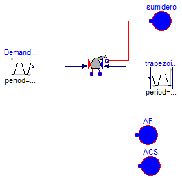
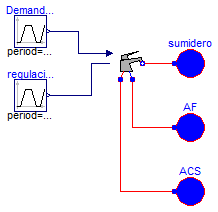

Ejemplos y modelos de verificacion de los distintos tipos de griferias
Package Content

Modelica definition
model Validacion_Monoblock_01
Soltermica.Valvulas.Griferia.Monoblock monoblock(
medium=Modelica.Thermal.FluidHeatFlow.Media.Water(),
dp_grifo=200000,
Kv_grifo=0.0001);
Modelica.Blocks.Sources.Trapezoid DemandaCaliente(
rising=3,
width=60,
falling=3,
startTime=10,
period=1000,
amplitude=0.5);
Modelica.Blocks.Sources.Trapezoid trapezoid1(
rising=3,
width=100,
falling=3,
period=1000,
startTime=50);
Modelica.Thermal.FluidHeatFlow.Sources.Ambient sumidero(medium=
Modelica.Thermal.FluidHeatFlow.Media.Water(), p_Ambient=101300);
Modelica.Thermal.FluidHeatFlow.Sources.Ambient AF(
medium=Modelica.Thermal.FluidHeatFlow.Media.Water(),
p_Ambient=301300,
T_Ambient=Modelica.SIunits.Conversions.from_degC(10));
Modelica.Thermal.FluidHeatFlow.Sources.Ambient ACS(
medium=Modelica.Thermal.FluidHeatFlow.Media.Water(),
p_Ambient=301300,
T_Ambient=Modelica.SIunits.Conversions.from_degC(60));
equation
connect(monoblock.flowPort_b, sumidero.flowPort);
connect(monoblock.fria, AF.flowPort);
connect(ACS.flowPort, monoblock.caliente);
connect(DemandaCaliente.y, monoblock.llaveCaliente);
connect(trapezoid1.y, monoblock.llaveFria);
end Validacion_Monoblock_01;

Modelica definition
model Validacion_Monomando_02
Modelica.Blocks.Sources.Trapezoid DemandaCaudal(
rising=3,
falling=3,
startTime=10,
period=1000,
amplitude=1,
width=120);
Modelica.Thermal.FluidHeatFlow.Sources.Ambient sumidero(medium=
Modelica.Thermal.FluidHeatFlow.Media.Water(), p_Ambient=101300);
Modelica.Thermal.FluidHeatFlow.Sources.Ambient AF(
medium=Modelica.Thermal.FluidHeatFlow.Media.Water(),
T_Ambient=Modelica.SIunits.Conversions.from_degC(10),
p_Ambient=251300);
Modelica.Thermal.FluidHeatFlow.Sources.Ambient ACS(
medium=Modelica.Thermal.FluidHeatFlow.Media.Water(),
T_Ambient=Modelica.SIunits.Conversions.from_degC(60),
p_Ambient=251300);
Monomando monomando(
medium=Modelica.Thermal.FluidHeatFlow.Media.Water(),
dp_grifo=150000,
Kv_grifo=0.0002);
Modelica.Blocks.Sources.Trapezoid regulacionTempertura(
period=1000,
amplitude=1,
rising=5,
width=60,
falling=5,
startTime=40);
equation
connect(monomando.flowPort_b, sumidero.flowPort);
connect(AF.flowPort, monomando.fria);
connect(ACS.flowPort, monomando.caliente);
connect(DemandaCaudal.y, monomando.caudal);
connect(regulacionTempertura.y, monomando.temperatura);
end Validacion_Monomando_02;
HTML-documentation generated by Dymola Mon Jun 09 02:33:17 2014.